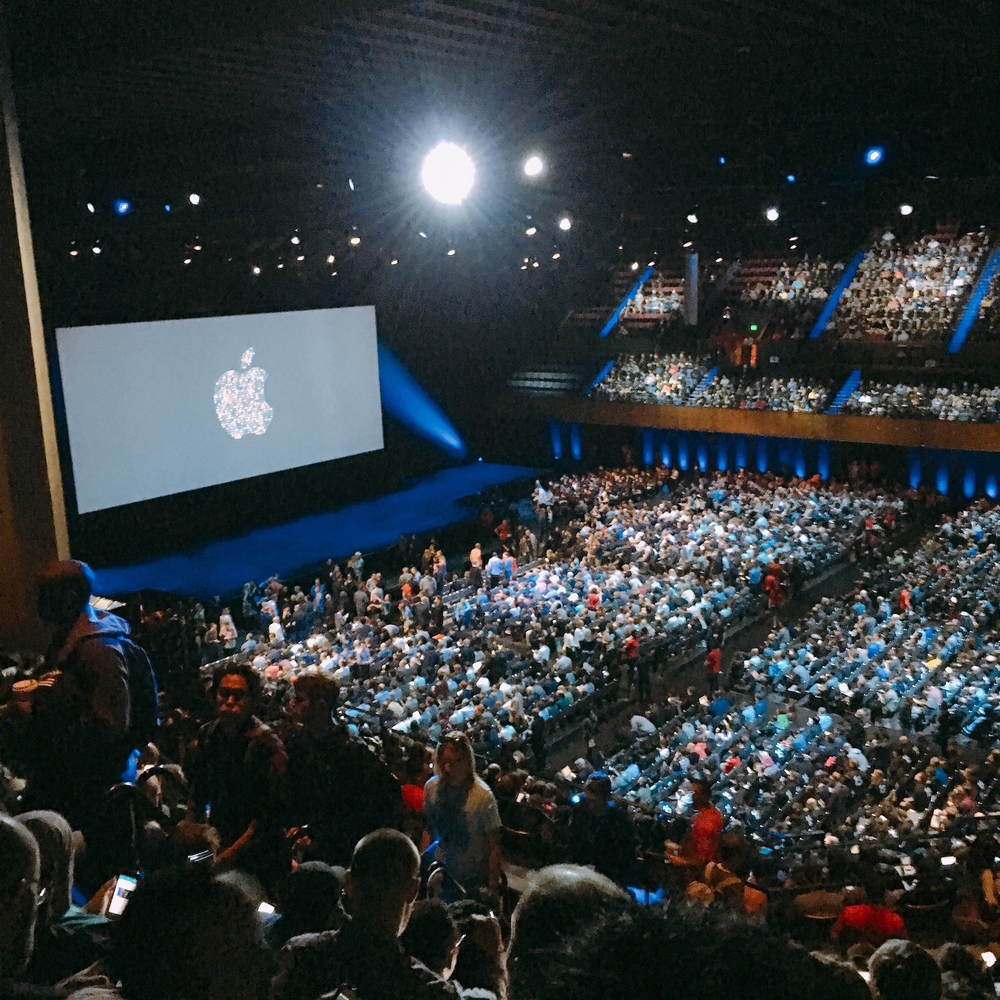

<!doctype html>
<html lang="en">

	<head>
		<meta charset="utf-8">

		<title>2016 성과정리</title>

		<meta name="description" content="A framework for easily creating beautiful presentations using HTML">
		<meta name="author" content="Hakim El Hattab">

		<meta name="apple-mobile-web-app-capable" content="yes">
		<meta name="apple-mobile-web-app-status-bar-style" content="black-translucent">

		<meta name="viewport" content="width=device-width, initial-scale=1.0, maximum-scale=1.0, user-scalable=no, minimal-ui">

		<link rel="stylesheet" href="css/reveal.css">
		<link rel="stylesheet" href="css/theme/black.css" id="theme">

		<!-- Code syntax highlighting -->
		<link rel="stylesheet" href="lib/css/zenburn.css">

		<!-- Printing and PDF exports -->
		<script>
			var link = document.createElement( 'link' );
			link.rel = 'stylesheet';
			link.type = 'text/css';
			link.href = window.location.search.match( /print-pdf/gi ) ? 'css/print/pdf.css' : 'css/print/paper.css';
			document.getElementsByTagName( 'head' )[0].appendChild( link );
		</script>

		<!--[if lt IE 9]>
		<script src="lib/js/html5shiv.js"></script>
		<![endif]-->
	</head>

	<body>
		<div class="reveal">
			<!-- Any section element inside of this container is displayed as a slide -->
			<div class="slides">
				<section data-markdown>
                    <script type="text/template">
                        ## 2016년 : WAV IOS 개발
                        * WAV 짧은 CBT기간에 맞춰 IOS 버젼출시
                        * V Animation Filter UI 개발
                        * 기술 발표
                           * Naver D2 Hello World 기고
                           * Naver Engineering Day 참가
                           * OpenSource화
                        * WWDC 참관. IOS10 관련 발표
                    </script>
                </section>
                <section>
<section data-markdown>
    <script type="text/template">
## Player, Gifting, Animation Filter

    </script>
</section>
<section data-markdown>
    <script type="text/template">
        ## Animation Filter
        
        </script>
</section>
</section>
                
<section>
    <section data-markdown>
        <script type="text/template">
            ## D2 기술기고
            
            http://d2.naver.com/helloworld/1994807
            </script>
    </section>
    <section data-markdown>
        <script type="text/template">
            ## Naver Engineering Day
            
            </script>
    </section>
    <section data-markdown>
        <script type="text/template">
            ## Github repository
            
            </script>
    </section>
</section>
<section>
    <section data-markdown>
        <script type="text/template">
            ## WWDC 2016 참석
            
            </script>
    </section>
    <section data-markdown>
        <script type="text/template">
            ## D2세미나, 사내 세미나 발표
            
            
            
            http://d2.naver.com/news/9814448
            http://yobi.navercorp.com/engineering/Meetup/issue/18
            </script>
    </section>
</section>

<section>
<section data-markdown>
<script type="text/template">
## 그밖에..
* AFNetworking, SDWebImage, APNG, Gitflow
</script>
</section>
<section data-markdown>
    <script type="text/template">
        ## OSS Issue 관리

        
        
        https://oss.navercorp.com/wav/wav_ios/issues/126
        https://oss.navercorp.com/VDev/V_iOS/issues/38
        </script>
</section>
</section>

<section data-markdown>
<script type="text/template">
## 발전하고 있는가?
Swift, Computer Vision, 미국팀과의 협업


</script>
</section>

<section data-markdown>
    <script type="text/template">
        
## 내년도 목표

* WAV의 성공
* Vision쪽과 관련된 기술과제
        </script>
</section>

<section data-markdown>
    <script type="text/template">
## 감사합니다.


    </script>
</section>


			</div>
		</div>

		<script src="lib/js/head.min.js"></script>
		<script src="js/reveal.js"></script>

		<script>

			// Full list of configuration options available at:
			// https://github.com/hakimel/reveal.js#configuration
			Reveal.initialize({
				controls: true,
				progress: true,
				history: true,
				center: true,

				transition: 'slide', // none/fade/slide/convex/concave/zoom

				// Optional reveal.js plugins
				dependencies: [
					{ src: 'lib/js/classList.js', condition: function() { return !document.body.classList; } },
					{ src: 'plugin/markdown/marked.js', condition: function() { return !!document.querySelector( '[data-markdown]' ); } },
					{ src: 'plugin/markdown/markdown.js', condition: function() { return !!document.querySelector( '[data-markdown]' ); } },
					{ src: 'plugin/highlight/highlight.js', async: true, condition: function() { return !!document.querySelector( 'pre code' ); }, callback: function() { hljs.initHighlightingOnLoad(); } },
					{ src: 'plugin/zoom-js/zoom.js', async: true },
					{ src: 'plugin/notes/notes.js', async: true }
				]
			});

		</script>

	</body>
</html>
